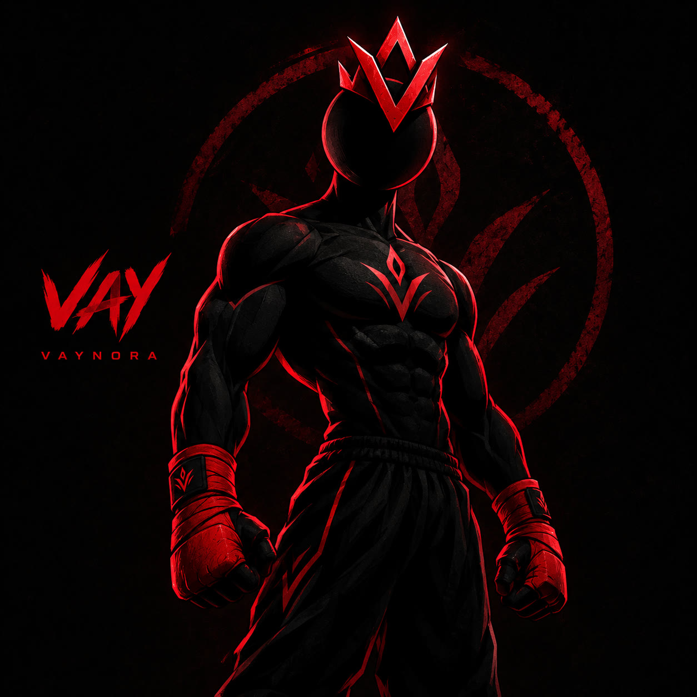

This is my character VAY (image attached). I am building a fixed POSE LIBRARY of him that I will reuse in all my videos, so he must look EXACTLY the same in every image in this chat: - muscular male fighter, full body, same proportions every time - the head is a smooth plain black sphere with NO face at all: no eyes, no mouth, no nose, no facial features of any kind - red glowing V-shaped crown on the head - black body with thin red glowing lines and a red V emblem on the chest - red hand wraps, LONG black fight pants down to the ankles with red lines (never shorts) Style: clean 2D cartoon / comic illustration, bold dark outlines, flat colors, subtle red rim light. Background: TRANSPARENT (PNG). If you cannot do transparent, use plain flat solid black #0D0D0D. Nothing around him except the prop I name. NO text, NO letters, NO numbers, NO logos, NO icons or arrows, NO other people. Format: vertical 9:16, whole body visible, centered, empty space above the head. Reply "OK" and wait for my poses.
Same VAY, same style, transparent background, full body, no face, no text. Pose: standing straight, relaxed, arms down, facing the viewer, neutral calm stance.
Same VAY, same style, transparent background, full body, no face, no text. Pose: pointing his index finger straight at the viewer, strong confident stance.
Same VAY, same style, transparent background, full body, no face, no text. Pose: pointing up with his index finger to the empty space above his head.
Same VAY, same style, transparent background, full body, no face, no text. Pose: explaining: one open palm extended toward the viewer, other hand relaxed, slight lean forward.
Same VAY, same style, transparent background, full body, no face, no text. Pose: thinking: one hand on the chin of his faceless sphere head, the other arm crossed on his chest.
Same VAY, same style, transparent background, full body, no face, no text. Pose: standing with arms crossed on his chest, serious strong stance.
Same VAY, same style, transparent background, full body, no face, no text. Pose: holding up ONE finger (index) toward the viewer.
Same VAY, same style, transparent background, full body, no face, no text. Pose: holding up TWO fingers toward the viewer.
Same VAY, same style, transparent background, full body, no face, no text. Pose: holding up THREE fingers toward the viewer.
Same VAY, same style, transparent background, full body, no face, no text. Pose: stop gesture: one arm extended forward, open palm facing the viewer, feet planted.
Same VAY, same style, transparent background, full body, no face, no text. Pose: shrugging: both palms up at shoulder height, shoulders raised.
Same VAY, same style, transparent background, full body, no face, no text. Pose: sitting on the ground, knees up, head down in both hands, sad.
Same VAY, same style, transparent background, full body, no face, no text. Pose: standing slumped, shoulders dropped, arms hanging, exhausted body language.
Same VAY, same style, transparent background, full body, no face, no text. Pose: standing, both hands gripping the sides of his head, stressed.
Same VAY, same style, transparent background, full body, no face, no text. Pose: stepping back in shock, both hands raised in front of the chest.
Same VAY, same style, transparent background, full body, no face, no text. Pose: on his knees, one fist on the ground, head down, defeated.
Same VAY, same style, transparent background, full body, no face, no text. Pose: rising from one knee, one hand pushing on the knee, getting back up with determination.
Same VAY, same style, transparent background, full body, no face, no text. Pose: fist pump: one fist pulled down at his side, celebrating a win.
Same VAY, same style, transparent background, full body, no face, no text. Pose: powerful heroic stance, both fists clenched, strong red glowing aura around him, low angle.
Same VAY, same style, transparent background, full body, no face, no text. Pose: sitting cross-legged on the ground, hands resting on knees, calm and peaceful.
Same VAY, same style, transparent background, full body, no face, no text. Pose: back view, walking away from the viewer, calm steps.
Same VAY, same style, transparent background, full body, no face, no text. Pose: fighting guard stance, fists up, side angle.
Same VAY, same style, transparent background, full body, no face, no text. Pose: throwing a straight punch toward the viewer, dynamic.
Same VAY, same style, transparent background, full body, no face, no text. Pose: high kick, side view, dynamic motion.
Same VAY, same style, transparent background, full body, no face, no text. Pose: running fast, side view.
Same VAY, same style, transparent background, full body, no face, no text. Pose: doing a push-up, side view.
Same VAY, same style, transparent background, full body, no face, no text. Pose: doing a deep squat, side view, arms forward.
Same VAY, same style, transparent background, full body, no face, no text. Pose: lifting a dumbbell in a bicep curl.
Same VAY, same style, transparent background, full body, no face, no text. Pose: standing, drinking from a water bottle.
Same VAY, same style, transparent background, full body, no face, no text. Pose: standing in prayer (qiyam), right hand over left on the chest, on a red and black prayer rug, side view.
Same VAY, same style, transparent background, full body, no face, no text. Pose: in ruku (bowing in prayer), back straight, hands on knees, on the prayer rug, side view.
Same VAY, same style, transparent background, full body, no face, no text. Pose: in sujood (prostration) on the prayer rug, side view.
Same VAY, same style, transparent background, full body, no face, no text. Pose: sitting on his knees, both palms raised in front of his chest in supplication (dua).
Same VAY, same style, transparent background, full body, no face, no text. Pose: sitting cross-legged, reading a closed-style green mushaf (Quran book) held open in his hands.
Same VAY, same style, transparent background, full body, no face, no text. Pose: washing his forearms under a running water tap, water splashing, side view.
Same VAY, same style, transparent background, full body, no face, no text. Pose: sleeping on his back on a simple bed.
Same VAY, same style, transparent background, full body, no face, no text. Pose: lying calmly on his RIGHT side on a simple bed, peaceful.
Same VAY, same style, transparent background, full body, no face, no text. Pose: sitting on the edge of a simple bed, bent forward, tired.
Same VAY, same style, transparent background, full body, no face, no text. Pose: sitting hunched, scrolling a smartphone, the screen glow lighting him.
Same VAY, same style, transparent background, full body, no face, no text. Pose: throwing a smartphone away with one hand, determined.
Same VAY, same style, transparent background, full body, no face, no text. Pose: sitting at a desk working on a laptop, focused, side view.
Same VAY, same style, transparent background, full body, no face, no text. Pose: sitting at a desk writing in a notebook with a pen.